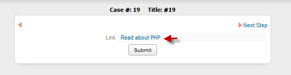

- Overview
- Properties
- Accessing Links with JavaScript
- Example setting a link
- Example with a button
- Example of a link containing a graphic
- Example with a dropdown box
- Accessing Links with Triggers
- Reading links in version 2.5.0 and later
- Setting Links before version 2.5.0
- Setting Link fields in version 2.5.0 and later
- Setting Links in Grids
Overview
 Links are used to display either a hyperlink to external web pages, or an internal link in ProcessMaker, such as a link to another case.
Links are used to display either a hyperlink to external web pages, or an internal link in ProcessMaker, such as a link to another case.
Properties
- Field Name *Required
- Label
Behavior
Link property
The address for the link, such as "http://www.myhomepage.com/welcome.html" or "file://192.168.1.1/Reports/quarter9-09.xls".
If the address for the link does not include the protocol, such as http:, ftp: or file:, then it will be treated as a relative link found at:
http://<IP-ADDRESS>/sys<WORKSPACE>/<LANGUAGE>/<SKIN>/dynaforms/
Remember to include the protocol. If it is not included, then the value of the Link property will be appended to the end, so "www.processmaker.com" becomes a URL like:
http://localhost/sysworkflow/en/green/dynaforms/www.processmaker.com
Linking inside ProcessMaker
It is best to use relative links when linking to another page inside ProcessMaker. Below are a list of different types of links to use. See G::header() for an explanation of the different GET variables to pass in the following links:
- The login screen: "../login/login"
- The cases list:
- In version 1.2: "../cases/cases_List"
- In version 1.6: "../cases/main"
- In version 2.0: "../cases/casesListExtJs"
- To open in the top frame in version 2.0: "../cases/casesListExtJsRedirector"
- Start a new case: "../cases/cases_New"
- Open an existing case: "../cases/cases_Open?APP_UID=<CASE-UID>&DEL_INDEX=<INDEX>"
- <NAME ... link="URL" ...>...NAME>
- Blank: The default option. Open the link in a new, unnamed browser window (or tab if the web browser is so configured). This option allows the user to continue working on the DynaForm.
- Self: Open the link in the same frame as the current DynaForm. This option will replace the DynaForm, but will leave the ProcessMaker top menu bar, the Cases top menu bar, and the Cases side bar on the screen.
- Parent: Open the link in the parent of the current frame. This option will replace the DynaForm and the Cases top menu bar, but will leave the ProcessMaker top menu bar and the Cases side menu bar on the screen.
- Top: Open the link in the topmost frame. This will open the link in the current browser window, replacing all content on the window, but the current topmost frame name will be maintained.
- Framename: Open the link in a specified frame. The specified frame can be one of the frames used by ProcessMaker or a custom frame (either in the same window or in a different window). If the frame name already already exists, then the link will open in that frame, otherwise the brower will open in a new window (or tab) with that new frame name. To maintain the ProcessMaker top menu bar, but replace the DynaForm and Cases side bar with the link, specify the "casesFrame" frame.
- <NAME ... target_sel="_blank|_self|_parent|_top" target="_blank|_self|_parent|_top" ...>...NAME>
- <NAME ... target_sel="" target="FRAME-NAME" ...>...NAME>
- <NAME ... value="TEXT" ...>...NAME>
Linking to Local Files
To link to a file stored locally on a Linux server, use the URL:
file:///path/to/file
For a local file on a Windows server:
file:///C:/path/to/file
Note that FireFox has a security policy which prevents opening local files by clicking on a link. To open the file, right click on the link, select "Copy Link Location", then go to the address box and press CTL+V to paste the link and then hit ENTER. To turn off this security policy, see these instructions. To avoid these problems, put files in the "public" directory of the Process Files Manager.
XML Definition:
Target property
The Target dropdown box is a new feature in ProcessMaker version 2.0 and is used to select where the link will be opened when clicked. There are five available options:
XML Definition:
If specifying a Framename:
Value property
The Value is the text shown to the user for the link. It can be the same text as the Link, if you want the user to see the address. Do NOT put HTML formatting tags in the Value. If formatting needs to be added to the displayed text for a link, then use JavaScript to set the innerHTML property of the link. (See example below.)
Note that the Value is different from the Label, which is the text displayed on the right hand side of the link to give more information about the link or identify it.
XML Definition:
Accessing Links with JavaScript
Link fields can not be accessed through their value and link properties, since they are just normal HTML hyperlinks. Instead, access DynaForm link fields through their href and innerHTMLproperties.
To read a link's address:
To change a link's address:
To read the displayed text for a link:
To change the displayed text for a link:
By default, links open in the same window as the DynaForm. To make a link open in a separate window add the code:
To click on a link using code:
getField(link-name).click();
else //Firefox & other browsers
getField(link-name).onclick();
Example setting a link
To set the URL and label to a link field, use the following JavaScript code:
getField("MyLink").innerHTML = "Read about PHP"; // To set link's label
A DynaForm has a button named "ToggleLink" which causes a link named "MyLink" to switch between the two addresses for Google and Yahoo:
if (getField("MyLink").href == "http://www.google.com") {
getField("MyLink").href = "http://www.yahoo.com";
getField("MyLink").innerHTML = "Yahoo!";
}
else {
getField("MyLink").href = "http://www.google.com";
getField("MyLink").innerHTML = "Google";
}
}
getField("ToggleLink").onclick = toggleLink;
Example of a link containing a graphic
In HTML, a graphic can serve as a link. For example:
However, DynaForm links do not allow HTML codes to be used in their Value property, so graphics can't be used as links. Instead, use JavaScript to insert a graphic into a link's displayed text when the DynaForm is initially displayed:
Example with a dropdown box
A DynaForm has a dropdown box named "SelectProduct" with a list of products to be ordered. The value for each option is a link to the product, and its label is the text to display for the link. Depending upon which product is selected, the link named "ProductLink" will be changed:
{
getField("ProductLink").href = this.value;
getField("ProductLink").innerHTML = this.options[this.selectedIndex].text;
}
getField("SelectProduct").onchange = changeLink;
A separate window could be automatically opened whenever a new option is selected in the dropdown box "SelectProduct":
function changeLink()
{
if (productWindow)
productWindow.location.href = this.value;
else
productWindow = window.open(this.value, "productWindow", "width=350,height=450");
}
getField("SelectProduct").onchange = changeLink;
Accessing Links with Triggers
Before version 2.5.0, DynaForm links did not store their values as case variables like normal fields when a DynaForm was submitted. In order to save the value of a DynaForm link so it can later be used in a trigger, the link must be saved in a hidden field when the DynaForm is submitted.
For example, add the following JavaScript code to a Submit button in a DynaForm, so that the the address and displayed text of a DynaForm link named "MyLink" will be saved in two hidden fields named "MyLinkHref" and "MyLinkText":
{
getField("MyLinkHref").value = getField("MyLink").href;
getField("MyLinkText").value = getField("MyLink").innerHTML;
}
getField("MySubmitButton").onclick = saveLink;
Then the address and displayed text can later be used in a Trigger by looking at the case variables @@MyLinkHref and @@MyLinkText:
$y = @@MyLinkText;
Reading links in version 2.5.0 and later
In version 2.5.0 and later, the URL and label of a link field will be saved to case variables named @@link-field-name and @@link-field-name_label when the DynaForm containing the link is submitted.
For example, if a link field is named "downloadReport", then the case variable @@downloadReport will be created to hold the link's URL and another case variable @@downloadReport_labelwill be created to hold the label for the link.
A trigger fired after a DynaForm can access the URL and label of a link field in that DynaForm, because they are stored in case variables which are created when the DynaForm is submitted. For example, the following trigger code gets the label of a link field named "downloadReport" and capitalizes it:
if (isset(@@downloadReport)) {
$url = @@downloadReport;
$label = strtoupper(@@downloadReport_label);
}
Setting Links before version 2.5.0
In order to set the value of a DynaForm link in a trigger before version 2.5.0, the link's address and displayed text have to be passed to the DynaForm in hidden fields. Then use JavaScript to read these hidden fields when the DynaForm is initially displayed and set the href and innerHTML properties of the link.
For example, if a DynaForm has a link named "MyLink", then add two hidden fields to the DynaForm named "MyLinkHref" and "MyLinkText" to hold the link's address and displayed text which will be set in the trigger. Then, create the following trigger to be fired before the DynaForm is displayed:
@@MyLinkText = "ProcessMaker Open Source";
Add the following JavaScript to the DynaForm to set the properties of MyLink when the form is initially displayed:
getField("MyLink").innerHTML = getField("MyLinkText").value;
Setting Link fields in version 2.5.0 and later
In version 2.5.0 and later, when a DynaForm is executed while running a case, if a case variable exists with the same name as the link field, then the value of the case variable will be become the URL for the link field. Similarly, if a case variable @@link-name_label exists, then its value will become the label for the link field.
To set the label and URL to a link field in a Dynaform in version 2.5.0 and later, create a trigger with the following code which will be fired before the DynaForm:
For example, to link to the PHP manual in a link field named "phpLink":
@@phpLink_label = "Read about PHP";
Then the DynaForm with the "phpLink" field will appear as:

Setting Links in Grids
With JavaScript the getGridField() function can be used to access a grid field link and set its label and URL. For example, to set the "homePage" link in the first row of a grid named "contactsGrid":
getGridField("contactsGrid", 1, "homePage").innerHTML = "Jane Doe's home page";
Similarly, a trigger could be fired beforehand to set case variables for the link's label and URL and pass those case variables as hidden fields in the DynaForm:
@@homePageText = "Jane Doe";
Then, create hidden fields named "homePageHref" and "homePageText" in the DynaForm and use the following JavaScript would populate the "homePage" link in the first row of the "contactsGrid":
getGridField("contactsGrid", 1, "homePage").innerHTML = getValueById("homePageText");
The problem is that there can be a variable number of grid rows, and it would be difficult to create a variable number of hidden fields. The solution is to create an associative array of associative arrays (which is how a grid is stored) in a trigger and pass that array to the DynaForm as a serialized JSON string in a hidden field.
For example, this trigger is used to populate the "contactsGrid" with 3 rows and also create a serialized string of the grid which can be passed to hidden field named "sContacts" in the DynaForm:
"1" => array("firstName"=>"Jane", "lastName"=>"Doe", "linkText"=>"Jane's Home", "linkHref"=>"http://www.janescorner.com" ),
"2" => array("firstName"=>"John", "lastName"=>"Smith", "linkText"=>"John's Page", "linkHref"=>"http://www.johnsmith.com/info"),
"3" => array("firstName"=>"Jess", "lastName"=>"Depp", "linkText"=>"Jess' Home", "linkHref"=>"http://www.jessathome.com" )
);
@@sContacts = json_encode(@=contactsGrid); //serialize the array
If the grid was populated with a database query, then the trigger would be very similar. For example:
if (is_array(@=contactsGrid) and count(@=contactsGrid) > 0)
@@sContacts = json_encode(@=gridContacts); //serialize the array
else
@@sContacts = "";
Then, use JavaScript to unserialize the string and populate the "homePage" links in the grid:
if (oContacts) {
for (var rowNo in oContacts) {
getGridField('contactsGrid', rowNo, 'homePage').href = oContacts[rowNo]["linkHref"];
getGridField('contactsGrid', rowNo, 'homePage').innerHTML = oContacts[rowNo]["linkText"];
getGridField('contactsGrid', rowNo, 'homePage').target = '_blank'; //to open in separate page
}
}